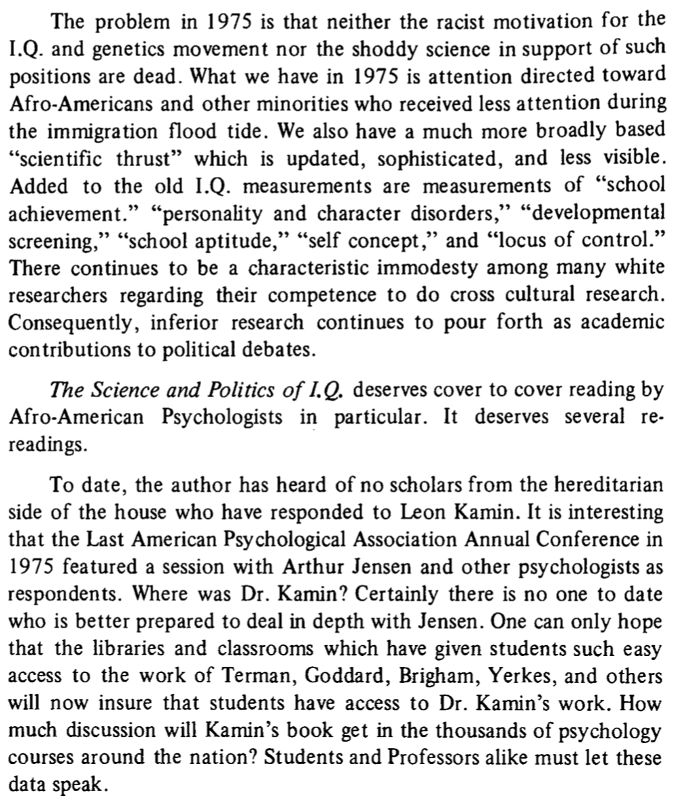

Reading the Journal of Black Psychology
Last edited: 02 July, 2020The Association of Black Psychology has been publishing the Journal of Black Psychology since 1974. I just learned about it. So, I’m reading it, because that’s what you do when you find out that you missed an entire foundational field in psychology.
I’m a cognitive psychologist who spends a large part of my research time considering how cognition in general is supported by computations of learning and memory processes. I’m also interested in psychology more broadly: how it fits together as a discipline, and how the institutions of psychology work, how psychology influences society, etc.
My impression of my own field, cognition, is that it is highly fragmented. Theree’s lots of veryone doing their own thing. There is no unified field theory of anything. Wondering about the “point” of things in cognitive psychology has sucked years of my life away. I guess I enjoy it, and like many other disciplines, perhaps struggling with the point is part of the point. Points don’t come for free.
I still think of myself as a NKOTB, hanging tough in psychology, oh, oh, oh, oh, oh. In my case, when you grow up in a northern Canadian small town, and then start grad school in 2001 (checks CV), you enter into a field that has been doing its thing without you for a long time. And, your job is to figure out a small part of that landscape, dig a new hole somewhere, and convince everyone else that no one looked in the hole before. If you do a good of this, you can dig into that hole for the rest of your life and never have to leave. I’ve been digging holes. It’s not that I haven’t been wondering why. I come up with lots of reasons to dig the holes I dig.
In any case, to wrap this up. I was recently appalled by the Psych Science publishing the now retracted racist IQ paper. I haven’t been paying attention to the scope of racism in my own discipline. By tugging at the thread of the history of IQ research, which I also mostly didn’t learn about in my training, I’ve been horrified to discover just how much eugenics played a role in founding and propagating psychology (Yakushko, 2019).
I’m in the process of climbing out of my research hole to learn about the racist and eugenicist ideologies that have dug the rabbit holes of psychology. As a part of this work, I found out the Journal of Black Psychology has been dismantling these issues from their inception, so I’m here to learn from the experts.
I’ve already done some reading and skimming through the journal. So, even though I know this work will inform me about structural racism and eugenics in psychology, I also know it will inform me about many other issues that I wasn’t thinking so much about. The papers I have read so far are building towers of perspective over the holes of psychology. I’m excited to read more, I need to start keeping notes:
Let’s start with Vol 1, Issue 1, 1974
Smith (1974)
Smith, W. D. (1974). “Editorial”. In: Journal of Black Psychology 1.1, pp. 5-6.
It’s interesting to flip through the first issue of journals. For example, I found it interesting to flip through the first issue in volume 1 of Psychological Review, which at the time was the journal for the American Psychological Association.
It is obvious when you read the Journal of Black Psychology, that the creation of the journal and new society (the Association of Black Psychologists) was partly motivated by a reaction against the APA. What was the reaction about?
I’ll consider this briefly from the lens of eugenics. Did you know that the founder of Psychological Review, James McKeen Catell, was a eugenicist? That’s something. It’s part of a deeply disturbing structural foundation of psychology. Some of this foundation is not particularly salient. For example, it’s not easy to find the word eugenic or eugenics in Psychological Review (try to find it using Psycinfo).

That’s curious.
However, if you know who is a eugenicist, because they for example founded the whole thing (e.g., Francis Galton), you can see that several known eugenicists published papers in the first issue of Psychological Review. You just have to connect those dots. TBH, it’s really more of a question of who isn’t a eugenicist in that issue.
If you read about eugenics, you learn that eugenicists just want to breed the best people to make society a better place for eternity. They also want to enact negative eugenics on anyone they don’t like, and attempt to eliminate them (e.g., forced sterilizations, Nazi genocide). This is just scratching the surface of the abhorrent practices and ideologies of eugenicists. They talk A LOT about doing this for the betterment of mankind. Their version of betterment is VERY SCARY.
It is very intriguing to read the very first editorial in Psych Review, which is written by an APA president at the time. Sidenote, did you know that between 1892 and 1947, there were 31 APA presidents that were members or leaders of eugenics societies (Yakushko, 2019). Have you ever wondered why that is? Or, say how it was that psychology was both created and weaponized by eugenicists to propagate eugenics policies.
In any case, I haven’t been able to determine precisely whether George Trumbull Ladd was a eugenicist or not when he wrote the presidential address for APA printed in the first issue of Psych review (Ladd, 1894). However, I did read the address. It doesn’t say eugenics anywhere. Ladd talks about three things, in order of most to least controversial. Roughly, 1) stats and methods issues, 2) Psychology as a science issues, and 3) Bettering mankind issues.
When discussing 1 & 2, Ladd acknowledges that there are differences of opinion in the room about these issues. When he gets to issue number 3, he says, “on the third of my three points…no considerable divergence of opinion is to be anticipated here”. I know how to read this room. Devoting the final piece of his address to the pressing need to better society is what it sounds like. A massive dogwhistle to eugenicists. In my opinion, Ladd is pointing out that he knows and the audience knows that they all agree that they are eugenicists. Maybe some of these psychologists weren’t card carrying eugenicists. But, more than enough were, for way to long.
Also, the eugenics of white psychologists wasn’t something that disappeared overnight. It hasn’t dissappeared to this day. It became more deeply entrenched in psychology at many levels. Black psychology is partly a revolution against the structures of white racism and eugenics in psychology. And, it is with this context that I truly appreciate reading the first issue in the Journal of Black Psychology. This marks a line in their scholarship announcing their intention to deconstruct white racism in psychology, and also build their own psychology that is not fundamentally a tool for eugenics. Imagine having a psychology that was not used as a tool to wipe people out. It is a brave moment and an honor to read about the black psychologists who took up this mission.
Williams (1974)
Williams, R. (1974). “A History of the Association of Black Psychologists: Early Formation and Development”. In: Journal of Black Psychology 1.1, pp. 9-24.
I’m not a member of APA and I don’t think I’ve ever been to an APA conference. But, if there was one APA conference I would’ve wanted to see, it would be the 77th meeting in 1969. Read the paper to find out why. The Association of Black Psychologists is an independent psychological society, this is a glimpse of the origin story.
This is a rich moment in time, and not being a historian, I’m woefully unequipped to discuss this. One point that I’ll draw out is the issue of testing, that is educational testing.
For example, Williams (1974) writes that, "ABPsi adopted the following six-point statement on testing:
The Association of Black Psychologists fully supports those parents who have chosen to defend their rights by refusing to allow their children and themselves to be subjected to achievement, intelligence, aptitude and performance tests, which have been and are being used to:
- Label black children as uneducable;
- Place black children in special classes;
- Potentiate inferior education; .
- Assign black children to lower educational tracks than whites:
- Deny black children higher educational opportunities; and
- Destroy positive intellectual growth and development ofblack children."
Also, that, “It became increasingly clear as the year progressed that APA did not intend to endorse the moratorium on testing since it had a vested interest in the testing movement. We could not expect the Educational Testing Service to endorse the moratorium either, inasmuch as much of its multimillion-dollar annual budget derives from testing. Neither could we expect the Psychological Corporation (publisher of the Wechsler Intelligence Scales) or Houghton-Mifflin (publisher of the Stanford-Binet) to endorse the testing moratorium. The Black Psychologists decided to move independently of APA. In closing: Charles Thomas has been elected”Honorary Chairman for Life" of ABPsi for his formative pioneer efforts."
What is the broader context, why did APBsi advocate for a moratorium on testing? First, obviously this form of testing: IQ tests, standardized tests throughout school, SAT, GRE, etc. is abundant in everyday american life right now. As a Canadian growing up I took these provincial tests every 3 years or so. I don’t think we had an SAT, not sure. I took the GRE. I’ve never taken an IQ test. There’s testing everywhere for sure today.
Full disclosure: I don’t have kids, so I haven’t thought about testing a whole lot. In our doctoral program we’ve recently debated whether we will require the GRE or not for admissions this year. We are doing a trial run of not requiring it. I read emails about pros and cons. I didn’t have much to say really. I was/am on sabbatical, and didn’t put time into the issue. I’ve put some time in now. I will now firmly advocate against requiring GREs ever again. Why? Perhaps, you can guess. Eugenics.
If it is not abundantly clear. I despise eugenics. Guess who was behind the organized efforts to test the hell out of schoolchildren everywhere? Eugenicists. Why would they do this? So, they could separate people into desired and undesired groups with pretty science numbers, and then help the desired groups (whites), and hurt the undesired groups, as much as possible. Remember also that eugenicists is another word for many psychologists. I don’t have time here to go into the psychologists responsible for promulgating IQ tests, and then school testing for the purposes of eugenics. But, obviously these horrendous policies impacted the black community in a profoundly negative way, for a very long time. If Eugenicist psychologists were trying to hurt your children, wouldn’t you call for a moratorium on testing? WHY IS TESTING STILL HAPPENING TODAY?!?!?!?!? This is a fight that has been happening for a while. The Black Psychologists have been leading that fight.
Can you believe we are only at the first actual article past the editorial?
NOTE: I’m going to be bouncing back and forth a bit, and missing things here and there. It’s a big journal.
Hilliard (1976)
Hilliard, A. G. (1976). "A Review of Leon Kamin’s _The Science__ and Politics of I.__Q__._". In: Journal of Black Psychology 2.2, pp. 64-74.
I just ordered the Kamin book on IQ testing. Also, this is a book review worth reading. Consider this table of notable early psychologists who were also eugenicists, from the book review.

Some excerpts that capture several important issues:


References
Hilliard, A. G. (1976). A Review of Leon Kamin’s The Science and Politics of I.Q. Journal of Black Psychology, 2(2), 64–74. https://doi.org/10/gg3hr5
Ladd, G. T. (1894). President’s address before the New York Meeting of the American Psychological Association. Psychological Review, 1(1), 1–21. https://doi.org/10/drzt6z
Smith, W. D. (1974). Editorial. Journal of Black Psychology, 1(1), 5–6. https://doi.org/10/gg3vcr
Williams, R. (1974). A History of the Association of Black Psychologists: Early Formation and Development. Journal of Black Psychology, 1(1), 9–24. https://doi.org/10/gg3hq4
Yakushko, O. (2019). Eugenics and its evolution in the history of western psychology: A critical archival review. Psychotherapy and Politics International, 17(2). https://doi.org/10/gg3hsf